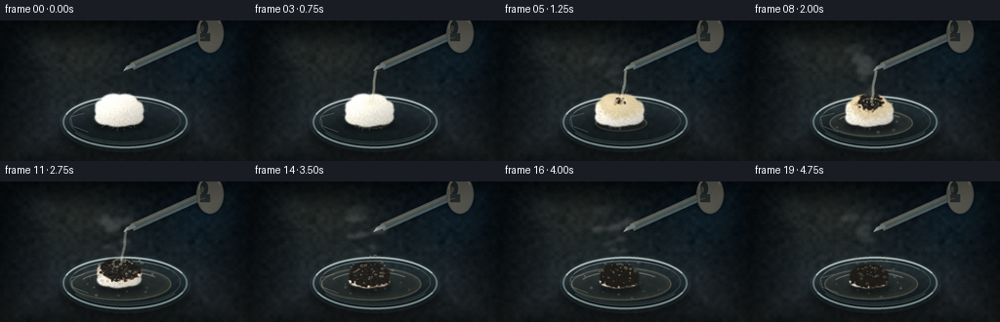
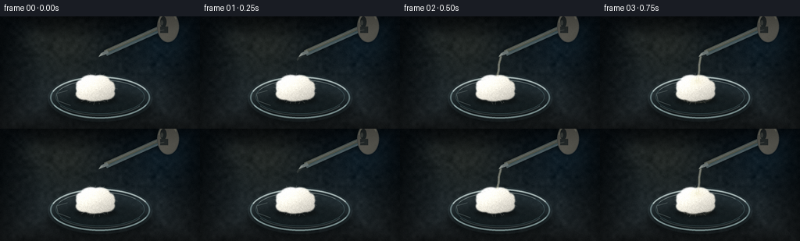

CODING AGENTS AS PIXEL WORLD MODELS
traex/DeepSeek-V4.1-Flash · phygen_154
点击播放 · 原生 RGB 像素
逐轮保存的候选
回放视频、检查图与代码变化。
每份候选均可单独播放。实际图片检查记录在下方工具轨迹中。
候选 01播放与检查图
点击播放 · 原生 RGB 像素


展开代码变化
--- 上一保存版本
+++ 本次保存版本
@@ -0,0 +1,557 @@
+from __future__ import annotations
+
+import math
+import random
+from pathlib import Path
+
+import numpy as np
+from PIL import Image, ImageDraw, ImageFilter
+
+from artifact_io import save
+
+
+WIDTH = 256
+HEIGHT = 144
+FPS = 4.0
+FRAME_COUNT = 20
+SS = 4
+CW = WIDTH * SS
+CH = HEIGHT * SS
+
+CASE_DIR = Path(__file__).resolve().parent
+RNG = random.Random(154)
+NP_RNG = np.random.default_rng(154)
+
+
+def clamp(value: float, low: float = 0.0, high: float = 1.0) -> float:
+ return max(low, min(high, value))
+
+
+def smoothstep(edge0: float, edge1: float, value: float) -> float:
+ if edge0 == edge1:
+ return float(value >= edge1)
+ x = clamp((value - edge0) / (edge1 - edge0))
+ return x * x * (3.0 - 2.0 * x)
+
+
+def mix(a, b, amount: float):
+ if isinstance(a, (tuple, list)):
+ return tuple(int(round(a[i] * (1.0 - amount) + b[i] * amount)) for i in range(len(a)))
+ return a * (1.0 - amount) + b * amount
+
+
+def rgba(color, alpha=255):
+ return (int(color[0]), int(color[1]), int(color[2]), int(alpha))
+
+
+def box(cx, cy, rx, ry):
+ return (
+ int(round((cx - rx) * SS)),
+ int(round((cy - ry) * SS)),
+ int(round((cx + rx) * SS)),
+ int(round((cy + ry) * SS)),
+ )
+
+
+def xy(x, y):
+ return (int(round(x * SS)), int(round(y * SS)))
+
+
+def blur(image: Image.Image, radius_px: float) -> Image.Image:
+ return image.filter(ImageFilter.GaussianBlur(radius_px * SS))
+
+
+def soft_shadow(layer: Image.Image, cx, cy, rx, ry, color=(4, 8, 10, 120), radius=2.0):
+ shadow = Image.new("RGBA", layer.size, (0, 0, 0, 0))
+ draw = ImageDraw.Draw(shadow)
+ draw.ellipse(box(cx, cy, rx, ry), fill=color)
+ shadow = blur(shadow, radius)
+ layer.alpha_composite(shadow)
+
+
+def make_low_noise(width, height, scale, seed):
+ rng = np.random.default_rng(seed)
+ small = rng.normal(0.0, 1.0, (max(2, height // scale), max(2, width // scale)))
+ image = Image.fromarray(np.uint8(np.clip(small * 35.0 + 128.0, 0, 255)))
+ image = image.resize((width, height), Image.Resampling.BICUBIC)
+ return (np.asarray(image, dtype=np.float32) - 128.0) / 35.0
+
+
+def build_background():
+ yy, xx = np.mgrid[0:CH, 0:CW].astype(np.float32)
+ xn = xx / CW
+ yn = yy / CH
+
+ top = np.array([9.0, 17.0, 23.0], dtype=np.float32)
+ middle = np.array([20.0, 31.0, 37.0], dtype=np.float32)
+ bottom = np.array([38.0, 44.0, 46.0], dtype=np.float32)
+ vertical = np.clip(yn / 0.72, 0.0, 1.0)[..., None]
+ rgb = top * (1.0 - vertical) + middle * vertical
+ bench = np.clip((yn - 0.40) / 0.60, 0.0, 1.0)[..., None]
+ rgb = rgb * (1.0 - bench) + bottom * bench
+
+ glow = np.exp(-(((xn - 0.32) / 0.34) ** 2 + ((yn - 0.25) / 0.48) ** 2) * 2.2)
+ rgb += np.array([22.0, 18.0, 10.0], dtype=np.float32) * glow[..., None]
+ cool = np.exp(-(((xn - 0.87) / 0.23) ** 2 + ((yn - 0.18) / 0.38) ** 2) * 2.0)
+ rgb += np.array([3.0, 11.0, 16.0], dtype=np.float32) * cool[..., None]
+
+ coarse = make_low_noise(CW, CH, 16, 11)
+ fine = make_low_noise(CW, CH, 3, 12)
+ rgb += (coarse * 3.2 + fine * 1.4)[..., None]
+
+ bench_mask = np.clip((yn - 0.405) * 30.0, 0.0, 1.0)
+ grain = make_low_noise(CW, CH, 2, 13)
+ grain = np.asarray(
+ Image.fromarray(np.uint8(np.clip(grain * 30.0 + 128.0, 0, 255))).filter(
+ ImageFilter.GaussianBlur(1.5 * SS)
+ ),
+ dtype=np.float32,
+ )
+ rgb += ((grain - 128.0) / 128.0 * 5.0 * bench_mask)[..., None]
+
+ edge_x = np.minimum(xx, CW - 1 - xx) / (CW * 0.5)
+ edge_y = np.minimum(yy, CH - 1 - yy) / (CH * 0.5)
+ vignette = np.clip(np.minimum(edge_x, edge_y) * 2.3, 0.0, 1.0)
+ rgb *= (0.58 + 0.42 * vignette)[..., None]
+
+ bg = Image.fromarray(np.uint8(np.clip(rgb, 0, 255)), "RGB").convert("RGBA")
+
+ bokeh = Image.new("RGBA", (CW, CH), (0, 0, 0, 0))
+ bd = ImageDraw.Draw(bokeh)
+ bd.ellipse(box(39, 30, 17, 17), fill=(130, 151, 151, 18))
+ bd.ellipse(box(48, 24, 9, 9), fill=(199, 191, 147, 15))
+ bd.ellipse(box(225, 38, 13, 13), fill=(100, 145, 161, 14))
+ bd.ellipse(box(18, 73, 8, 8), fill=(198, 167, 114, 13))
+ bokeh = blur(bokeh, 8.0)
+ bg.alpha_composite(bokeh)
+ return bg
+
+
+def build_dish():
+ layer = Image.new("RGBA", (CW, CH), (0, 0, 0, 0))
+ soft_shadow(layer, 128, 116, 69, 20, color=(1, 5, 6, 145), radius=5.0)
+
+ glass = Image.new("RGBA", (CW, CH), (0, 0, 0, 0))
+ draw = ImageDraw.Draw(glass)
+ draw.ellipse(box(128, 105, 67, 30), fill=(122, 157, 165, 22))
+ draw.ellipse(box(128, 104, 64, 27), outline=(173, 206, 208, 122), width=2 * SS)
+ draw.ellipse(box(128, 104, 58, 23), fill=(115, 157, 166, 18))
+ draw.ellipse(box(128, 103, 57, 22), outline=(126, 173, 179, 74), width=1 * SS)
+
+ draw.arc(box(128, 104, 64, 27), 198, 337, fill=(222, 240, 237, 175), width=2 * SS)
+ draw.arc(box(128, 104, 64, 27), 25, 142, fill=(113, 146, 149, 105), width=1 * SS)
+ draw.arc(box(128, 103, 57, 22), 203, 323, fill=(219, 237, 234, 96), width=1 * SS)
+ draw.line(
+ [xy(86, 95), xy(72, 99), xy(74, 108), xy(90, 114)],
+ fill=(211, 231, 227, 65),
+ width=1 * SS,
+ )
+ layer.alpha_composite(glass)
+ return layer
+
+
+PUFFS = [
+ (0.00, 0.02, 0.82, 0.72),
+ (-0.50, -0.05, 0.48, 0.54),
+ (0.50, -0.04, 0.50, 0.52),
+ (-0.24, -0.48, 0.52, 0.46),
+ (0.23, -0.47, 0.50, 0.45),
+ (-0.56, 0.37, 0.43, 0.39),
+ (0.53, 0.35, 0.46, 0.41),
+ (-0.10, 0.47, 0.54, 0.40),
+ (0.14, 0.45, 0.48, 0.38),
+ (-0.67, -0.28, 0.30, 0.31),
+ (0.67, -0.25, 0.31, 0.30),
+ (-0.38, 0.12, 0.32, 0.36),
+ (0.36, 0.10, 0.34, 0.35),
+ (-0.18, -0.18, 0.43, 0.39),
+ (0.17, -0.15, 0.42, 0.38),
+ (0.03, 0.20, 0.42, 0.40),
+ (-0.45, -0.42, 0.24, 0.23),
+ (0.43, -0.42, 0.25, 0.22),
+ (-0.49, 0.45, 0.23, 0.20),
+ (0.49, 0.43, 0.22, 0.21),
+]
+
+
+def build_fibers():
+ fibers = []
+ for _ in range(92):
+ angle = RNG.uniform(-math.pi, math.pi)
+ length = RNG.uniform(0.18, 0.72)
+ start_r = RNG.uniform(0.05, 0.72)
+ sx = math.cos(angle) * start_r
+ sy = math.sin(angle) * start_r * 0.78
+ ex = sx + math.cos(angle + RNG.uniform(-0.55, 0.55)) * length
+ ey = sy + math.sin(angle + RNG.uniform(-0.55, 0.55)) * length * 0.72
+ fibers.append((sx, sy, ex, ey, RNG.uniform(0.45, 1.15), RNG.uniform(20, 64)))
+ return fibers
+
+
+FIBERS = build_fibers()
+
+
+def cotton_layer(frame_index: int):
+ t = frame_index / (FRAME_COUNT - 1)
+ contact = smoothstep(0.12, 0.25, t)
+ reaction = smoothstep(0.18, 0.82, t)
+ collapse = smoothstep(0.30, 0.90, t)
+
+ cx = 122.0
+ cy = 92.5 + collapse * 4.8
+ rx = 24.5 * (1.0 - 0.20 * collapse)
+ ry = 18.2 * (1.0 - 0.28 * collapse)
+
+ mask = Image.new("L", (CW, CH), 0)
+ md = ImageDraw.Draw(mask)
+ for px, py, prx, pry in PUFFS:
+ wobble = 1.0 + 0.015 * math.sin(frame_index * 0.65 + px * 8.0)
+ mx = cx + px * rx * wobble
+ my = cy + py * ry * wobble
+ md.ellipse(box(mx, my, prx * rx * 1.06, pry * ry * 1.06), fill=255)
+ md.ellipse(box(cx, cy, rx * 0.93, ry * 0.82), fill=255)
+ mask = mask.filter(ImageFilter.GaussianBlur(0.65 * SS))
+ mask_arr = np.asarray(mask, dtype=np.float32) / 255.0
+
+ yy, xx = np.mgrid[0:CH, 0:CW].astype(np.float32)
+ x = (xx + 0.5) / SS
+ y = (yy + 0.5) / SS
+ nx = (x - cx) / rx
+ ny = (y - cy) / ry
+
+ fine = make_low_noise(CW, CH, 2, 31)
+ coarse = make_low_noise(CW, CH, 9, 32)
+ shade = np.clip(1.03 - 0.105 * nx - 0.145 * ny + fine * 0.035, 0.68, 1.16)
+
+ contact_x = cx + 1.0
+ contact_y = cy - ry * 0.54
+ dx = (x - contact_x) / rx
+ dy = (y - contact_y) / ry
+ dist = np.sqrt(dx * dx + dy * dy) + coarse * 0.075 + fine * 0.022
+
+ char_radius = 0.10 + 1.36 * reaction
+ char_amt = 1.0 - np.clip((dist - (char_radius - 0.13)) / 0.26, 0.0, 1.0)
+ char_amt = char_amt * char_amt * (3.0 - 2.0 * char_amt)
+ char_amt = np.clip(char_amt * smoothstep(0.16, 0.27, t), 0.0, 1.0)
+
+ wet_radius = 0.18 + 0.82 * contact
+ wet_amt = 1.0 - np.clip((dist - (wet_radius - 0.18)) / 0.35, 0.0, 1.0)
+ wet_amt = np.clip(wet_amt * contact, 0.0, 1.0)
+
+ dry = np.array([239.0, 235.0, 223.0], dtype=np.float32)
+ wet = np.array([207.0, 185.0, 135.0], dtype=np.float32)
+ brown = np.array([105.0, 65.0, 38.0], dtype=np.float32)
+ char = np.array([29.0, 28.0, 25.0], dtype=np.float32)
+
+ rgb = dry[None, None, :] * shade[..., None]
+ rgb = rgb * (1.0 - wet_amt[..., None] * 0.70) + wet[None, None, :] * wet_amt[..., None] * 0.70
+ brown_mix = np.clip((char_amt - 0.08) / 0.72, 0.0, 1.0) * 0.88
+ rgb = rgb * (1.0 - brown_mix[..., None]) + brown[None, None, :] * brown_mix[..., None]
+ char_mix = np.clip((char_amt - 0.56) / 0.44, 0.0, 1.0)
+ rgb = rgb * (1.0 - char_mix[..., None]) + char[None, None, :] * char_mix[..., None]
+
+ warm_spec = np.clip(1.0 - np.sqrt((nx + 0.32) ** 2 + (ny + 0.36) ** 2) * 1.3, 0.0, 1.0)
+ rgb += warm_spec[..., None] * np.array([14.0, 13.0, 9.0], dtype=np.float32) * (1.0 - char_amt[..., None])
+ rgb += (fine * 3.8)[..., None]
+
+ alpha = np.clip(mask_arr * 255.0, 0, 255).astype(np.uint8)
+ cotton = Image.fromarray(
+ np.dstack(
+ [
+ np.uint8(np.clip(rgb[..., 0], 0, 255)),
+ np.uint8(np.clip(rgb[..., 1], 0, 255)),
+ np.uint8(np.clip(rgb[..., 2], 0, 255)),
+ alpha,
+ ]
+ ),
+ "RGBA",
+ )
+
+ fiber_layer = Image.new("RGBA", (CW, CH), (0, 0, 0, 0))
+ fd = ImageDraw.Draw(fiber_layer)
+ fiber_dry = mix((255, 253, 244), (146, 107, 67), smoothstep(0.20, 0.78, t))
+ fiber_dark = mix((203, 197, 184), (34, 31, 28), smoothstep(0.48, 0.90, t))
+ for sx, sy, ex, ey, width, alpha0 in FIBERS:
+ local_char = clamp(reaction * 0.9 + (1.0 - abs(sx + ex) * 0.35) * 0.16)
+ color = mix(fiber_dry, fiber_dark, local_char)
+ p0 = xy(cx + sx * rx, cy + sy * ry)
+ p1 = xy(cx + ex * rx, cy + ey * ry)
+ fd.line([p0, p1], fill=rgba(color, int(alpha0 * (0.80 + 0.20 * math.sin(frame_index + sx * 17.0)))), width=max(1, int(width * SS)))
+ fiber_arr = np.asarray(fiber_layer).copy()
+ fiber_arr[..., 3] = (fiber_arr[..., 3].astype(np.float32) * mask_arr).astype(np.uint8)
+ cotton.alpha_composite(Image.fromarray(fiber_arr, "RGBA"))
+
+ edge = Image.new("RGBA", (CW, CH), (0, 0, 0, 0))
+ ed = ImageDraw.Draw(edge)
+ for i in range(28):
+ angle = i / 28.0 * math.tau + RNG.uniform(-0.06, 0.06)
+ r0 = RNG.uniform(0.83, 0.99)
+ r1 = RNG.uniform(1.02, 1.18)
+ sx = cx + math.cos(angle) * rx * r0
+ sy = cy + math.sin(angle) * ry * r0
+ ex = cx + math.cos(angle + RNG.uniform(-0.1, 0.1)) * rx * r1
+ ey = cy + math.sin(angle + RNG.uniform(-0.1, 0.1)) * ry * r1
+ col = mix((251, 248, 238), (88, 68, 48), smoothstep(0.15, 0.68, t))
+ ed.line([xy(sx, sy), xy(ex, ey)], fill=rgba(col, int(48 * (1.0 - 0.55 * t))), width=1 * SS)
+ edge = blur(edge, 0.25)
+ cotton.alpha_composite(edge)
+ return cotton, (cx, cy, rx, ry, t, reaction, collapse)
+
+
+def build_puddle(frame_index: int):
+ t = frame_index / (FRAME_COUNT - 1)
+ amount = smoothstep(0.10, 0.58, t) * (1.0 - 0.10 * smoothstep(0.86, 1.0, t))
+ if amount <= 0.01:
+ return Image.new("RGBA", (CW, CH), (0, 0, 0, 0))
+
+ layer = Image.new("RGBA", (CW, CH), (0, 0, 0, 0))
+ draw = ImageDraw.Draw(layer)
+ cx, cy = 124.0, 105.0
+ rx = 18.0 + 34.0 * amount
+ ry = 6.0 + 12.0 * amount
+ draw.ellipse(box(cx, cy, rx, ry), fill=(196, 181, 131, 29))
+ draw.ellipse(box(cx - 2, cy - 1, rx * 0.91, ry * 0.78), fill=(231, 220, 178, 16))
+ draw.ellipse(box(cx, cy, rx * 0.98, ry * 0.92), outline=(232, 223, 191, 77), width=1 * SS)
+ draw.arc(box(cx, cy, rx * 0.82, ry * 0.72), 203, 325, fill=(247, 240, 212, 105), width=1 * SS)
+ draw.arc(box(cx, cy, rx, ry), 15, 125, fill=(112, 104, 76, 55), width=1 * SS)
+
+ for i in range(12):
+ angle = i * 2.399 + 0.4
+ br = RNG.uniform(0.2, 0.87)
+ bx = cx + math.cos(angle) * rx * br
+ by = cy + math.sin(angle) * ry * br
+ rr = RNG.uniform(0.55, 1.8)
+ draw.ellipse(box(bx, by, rr, rr * 0.8), outline=(244, 241, 222, RNG.randint(38, 75)), width=1 * SS)
+ layer = blur(layer, 0.28)
+ return layer
+
+
+def draw_pipette(frame_index: int):
+ t = frame_index / (FRAME_COUNT - 1)
+ layer = Image.new("RGBA", (CW, CH), (0, 0, 0, 0))
+
+ shadow = Image.new("RGBA", (CW, CH), (0, 0, 0, 0))
+ sd = ImageDraw.Draw(shadow)
+ sd.line([xy(211, 13), xy(134, 47)], fill=(0, 5, 7, 120), width=10 * SS)
+ sd.ellipse(box(211, 13, 15, 19), fill=(0, 5, 7, 110))
+ shadow = blur(shadow, 3.0)
+ layer.alpha_composite(shadow)
+
+ glass = Image.new("RGBA", (CW, CH), (0, 0, 0, 0))
+ draw = ImageDraw.Draw(glass)
+ draw.line([xy(211, 13), xy(135, 47)], fill=(190, 220, 222, 90), width=8 * SS)
+ draw.line([xy(209, 13), xy(134, 46)], fill=(229, 222, 179, 86), width=5 * SS)
+ draw.line([xy(213, 10), xy(139, 43)], fill=(246, 251, 247, 96), width=1 * SS)
+ draw.line([xy(207, 16), xy(132, 49)], fill=(122, 162, 168, 100), width=1 * SS)
+
+ draw.polygon(
+ [
+ xy(137, 43),
+ xy(129, 47),
+ xy(126, 52),
+ xy(131, 50),
+ xy(139, 47),
+ ],
+ fill=(220, 232, 226, 112),
+ )
+ draw.line([xy(131, 48), xy(127, 51)], fill=(249, 251, 237, 145), width=1 * SS)
+
+ bulb = box(215, 13, 14, 20)
+ draw.ellipse(bulb, fill=(76, 77, 73, 235))
+ draw.ellipse(box(215, 13, 13, 19), fill=(97, 95, 86, 225))
+ draw.arc(box(215, 13, 13, 19), 196, 328, fill=(159, 154, 133, 170), width=2 * SS)
+ draw.ellipse(box(209, 7, 4.0, 7.0), fill=(141, 139, 124, 48))
+ draw.ellipse(box(207, 8, 1.8, 3.2), fill=(205, 201, 179, 70))
+
+ draw.rectangle(box(210, 17, 5, 4), fill=(42, 47, 45, 220))
+ draw.line([xy(205, 18), xy(210, 17)], fill=(173, 172, 155, 100), width=1 * SS)
+ layer.alpha_composite(glass)
+
+ contact = smoothstep(0.12, 0.22, t)
+ pour_alpha = smoothstep(0.025, 0.11, t) * (1.0 - smoothstep(0.54, 0.67, t))
+ if pour_alpha > 0.01:
+ head = smoothstep(0.025, 0.14, t)
+ start_x, start_y = 128.8, 51.0
+ end_x, end_y = 124.0, 84.5
+ stream_end_y = start_y + (end_y - start_y) * head
+ stream = Image.new("RGBA", (CW, CH), (0, 0, 0, 0))
+ st = ImageDraw.Draw(stream)
+ points = []
+ count = 24
+ for i in range(count + 1):
+ frac = i / count
+ y = start_y + (stream_end_y - start_y) * frac
+ x = start_x + (end_x - start_x) * frac + 0.65 * math.sin(frac * 8.0 + frame_index * 0.95) * math.sin(math.pi * frac)
+ points.append(xy(x, y))
+ st.line(points, fill=rgba((228, 222, 184), int(92 * pour_alpha)), width=3 * SS, joint="curve")
+ st.line(points, fill=rgba((249, 249, 226), int(112 * pour_alpha)), width=1 * SS, joint="curve")
+
+ for i in range(4):
+ phase = (frame_index * 0.21 + i * 0.23) % 1.0
+ if phase < head:
+ yy0 = start_y + (stream_end_y - start_y) * phase
+ xx0 = start_x + (end_x - start_x) * phase + 0.5 * math.sin(phase * 9.0 + frame_index)
+ st.ellipse(box(xx0, yy0, 0.9, 1.6), fill=rgba((255, 255, 241), int(100 * pour_alpha)))
+ stream = blur(stream, 0.16)
+ layer.alpha_composite(stream)
+
+ if contact > 0.05 and pour_alpha > 0.05:
+ ring_rx = 3.0 + 7.0 * smoothstep(0.12, 0.34, t)
+ ring_ry = 1.2 + 2.8 * smoothstep(0.12, 0.34, t)
+ splash = Image.new("RGBA", (CW, CH), (0, 0, 0, 0))
+ sp = ImageDraw.Draw(splash)
+ sp.arc(box(124, 83.5, ring_rx, ring_ry), 195, 345, fill=(240, 236, 204, 90), width=1 * SS)
+ for i in range(5):
+ angle = -math.pi * (0.12 + i * 0.19)
+ rr = ring_rx * RNG.uniform(0.7, 1.15)
+ sx = 124 + math.cos(angle) * rr
+ sy = 83.5 + math.sin(angle) * ring_ry
+ sp.ellipse(box(sx, sy, 0.65, 0.9), fill=(243, 239, 214, 95))
+ layer.alpha_composite(splash)
+
+ return layer
+
+
+def build_bubbles(frame_index: int):
+ t = frame_index / (FRAME_COUNT - 1)
+ reaction = smoothstep(0.20, 0.72, t)
+ if reaction <= 0.02:
+ return Image.new("RGBA", (CW, CH), (0, 0, 0, 0))
+
+ layer = Image.new("RGBA", (CW, CH), (0, 0, 0, 0))
+ draw = ImageDraw.Draw(layer)
+ for i in range(26):
+ angle = i * 2.399 + 0.7
+ radial = RNG.uniform(0.30, 1.05)
+ bx = 123.5 + math.cos(angle) * 24.0 * radial
+ by = 91.5 + math.sin(angle) * 15.0 * radial + 1.8 * math.sin(frame_index * 0.7 + i)
+ rr = RNG.uniform(0.55, 1.8) * (0.7 + 0.45 * reaction)
+ visible = smoothstep(0.20 + i * 0.012, 0.30 + i * 0.012, t)
+ if visible <= 0:
+ continue
+ fade = visible * (1.0 - 0.28 * smoothstep(0.78, 1.0, t))
+ color = mix((239, 235, 209), (141, 124, 94), smoothstep(0.35, 0.82, t))
+ draw.ellipse(box(bx, by, rr, rr * 0.72), outline=rgba(color, int(125 * fade)), width=1 * SS)
+ draw.ellipse(box(bx - rr * 0.25, by - rr * 0.23, rr * 0.25, rr * 0.18), fill=rgba((255, 252, 235), int(110 * fade)))
+ layer = blur(layer, 0.18)
+ return layer
+
+
+def build_smoke(frame_index: int):
+ t = frame_index / (FRAME_COUNT - 1)
+ intensity = smoothstep(0.24, 0.48, t) * (1.0 - 0.62 * smoothstep(0.82, 1.0, t))
+ if intensity <= 0.01:
+ return Image.new("RGBA", (CW, CH), (0, 0, 0, 0))
+
+ layer = Image.new("RGBA", (CW, CH), (0, 0, 0, 0))
+ draw = ImageDraw.Draw(layer)
+ for i in range(9):
+ phase = (t * 1.45 + i * 0.137) % 1.0
+ birth = smoothstep(0.00, 0.18, phase) * (1.0 - smoothstep(0.72, 1.0, phase))
+ if birth <= 0.01:
+ continue
+ base_x = 118.0 + math.sin(i * 2.1) * 9.0 + (i - 4) * 1.2
+ base_y = 85.0 + math.cos(i * 1.7) * 4.0
+ rise = 8.0 + 50.0 * phase
+ drift = math.sin(phase * 4.2 + i * 1.3) * (2.5 + 8.0 * phase)
+ width = 3.0 + 8.5 * phase
+ x = base_x + drift
+ y = base_y - rise
+ alpha = int((22 + 27 * intensity) * birth)
+ draw.ellipse(box(x, y, width, width * 0.55), fill=(225, 231, 225, alpha))
+ draw.ellipse(box(x - width * 0.6, y + width * 0.16, width * 0.72, width * 0.42), fill=(235, 238, 231, int(alpha * 0.82)))
+ draw.ellipse(box(x + width * 0.48, y - width * 0.08, width * 0.64, width * 0.38), fill=(215, 222, 216, int(alpha * 0.72)))
+
+ # Thin curls nearest the hot, darkening cotton.
+ if 0.18 < t < 0.78:
+ local = smoothstep(0.18, 0.30, t) * (1.0 - smoothstep(0.66, 0.80, t))
+ for i in range(5):
+ y0 = 82.0 - i * 2.2
+ x0 = 119.0 + math.sin(frame_index * 0.7 + i * 1.6) * 4.0 + i * 2.5
+ pts = []
+ for j in range(7):
+ q = j / 6.0
+ pts.append(xy(x0 + math.sin(q * 5.2 + i + frame_index * 0.5) * (1.5 + 2.5 * q), y0 - 10.0 * q))
+ draw.line(pts, fill=(231, 232, 221, int(38 * local)), width=2 * SS, joint="curve")
+
+ layer = blur(layer, 2.0)
+ return layer
+
+
+def add_contact_gloss(frame_index: int):
+ t = frame_index / (FRAME_COUNT - 1)
+ amount = smoothstep(0.12, 0.30, t) * (1.0 - 0.50 * smoothstep(0.65, 1.0, t))
+ if amount <= 0.01:
+ return Image.new("RGBA", (CW, CH), (0, 0, 0, 0))
+ layer = Image.new("RGBA", (CW, CH), (0, 0, 0, 0))
+ draw = ImageDraw.Draw(layer)
+ for i in range(11):
+ angle = i * 2.2 + 0.4
+ rr = RNG.uniform(2.0, 19.0)
+ x = 123.0 + math.cos(angle) * rr
+ y = 91.0 + math.sin(angle) * rr * 0.57
+ w = RNG.uniform(0.45, 1.2)
+ draw.ellipse(box(x, y, w, w * 0.65), fill=(255, 250, 224, int(RNG.randint(50, 105) * amount)))
+ layer = blur(layer, 0.18)
+ return layer
+
+
+def add_dish_front_rim(frame: Image.Image):
+ layer = Image.new("RGBA", (CW, CH), (0, 0, 0, 0))
+ draw = ImageDraw.Draw(layer)
+ draw.arc(box(128, 104, 64, 27), 22, 158, fill=(188, 215, 213, 116), width=2 * SS)
+ draw.arc(box(128, 104, 58, 23), 28, 152, fill=(215, 231, 226, 56), width=1 * SS)
+ frame.alpha_composite(layer)
+
+
+def add_finish(frame: Image.Image, frame_index: int):
+ arr = np.asarray(frame, dtype=np.float32)
+ yy, xx = np.mgrid[0:CH, 0:CW].astype(np.float32)
+ edge_x = np.minimum(xx, CW - 1 - xx) / (CW * 0.5)
+ edge_y = np.minimum(yy, CH - 1 - yy) / (CH * 0.5)
+ vignette = np.clip(np.minimum(edge_x, edge_y) * 2.5, 0.0, 1.0)
+ factor = 0.78 + 0.22 * vignette
+ arr[..., :3] *= factor[..., None]
+
+ grain = make_low_noise(CW, CH, 2, 100 + frame_index)
+ arr[..., :3] += grain[..., None] * 1.8
+ arr[..., :3] = np.clip(arr[..., :3], 0, 255)
+ return Image.fromarray(np.uint8(arr), "RGBA")
+
+
+def render_frame(frame_index: int):
+ frame = BACKGROUND.copy()
+ frame.alpha_composite(DISH)
+
+ puddle = build_puddle(frame_index)
+ frame.alpha_composite(puddle)
+
+ cotton, geom = cotton_layer(frame_index)
+ cx, cy, rx, ry, t, reaction, collapse = geom
+ soft_shadow(frame, cx + 1.0, 108.0 + 1.5 * collapse, rx * 1.10, 5.2 + 1.2 * collapse, color=(7, 7, 5, 115), radius=2.2)
+ frame.alpha_composite(cotton)
+
+ gloss = add_contact_gloss(frame_index)
+ frame.alpha_composite(gloss)
+ frame.alpha_composite(build_bubbles(frame_index))
+ frame.alpha_composite(draw_pipette(frame_index))
+ frame.alpha_composite(build_smoke(frame_index))
+ add_dish_front_rim(frame)
+ frame = add_finish(frame, frame_index)
+
+ # Supersampled render -> requested RGB resolution.
+ rgb = frame.convert("RGB").resize((WIDTH, HEIGHT), Image.Resampling.LANCZOS)
+ return np.asarray(rgb, dtype=np.uint8)
+
+
+def main():
+ global BACKGROUND, DISH
+ BACKGROUND = build_background()
+ DISH = build_dish()
+ frames = np.stack([render_frame(i) for i in range(FRAME_COUNT)])
+ save(frames, CASE_DIR)
+ print(f"Saved {len(frames)} frames to {CASE_DIR}")
+
+
+if __name__ == "__main__":
+ main()
候选 02播放与检查图
点击播放 · 原生 RGB 像素

展开代码变化
--- 上一保存版本
+++ 本次保存版本
@@ -114,7 +114,7 @@
vignette = np.clip(np.minimum(edge_x, edge_y) * 2.3, 0.0, 1.0)
rgb *= (0.58 + 0.42 * vignette)[..., None]
- bg = Image.fromarray(np.uint8(np.clip(rgb, 0, 255)), "RGB").convert("RGBA")
+ bg = Image.fromarray(np.uint8(np.clip(rgb, 0, 255))).convert("RGBA")
bokeh = Image.new("RGBA", (CW, CH), (0, 0, 0, 0))
bd = ImageDraw.Draw(bokeh)
@@ -263,8 +263,7 @@
np.uint8(np.clip(rgb[..., 2], 0, 255)),
alpha,
]
- ),
- "RGBA",
+ )
)
fiber_layer = Image.new("RGBA", (CW, CH), (0, 0, 0, 0))
@@ -279,7 +278,7 @@
fd.line([p0, p1], fill=rgba(color, int(alpha0 * (0.80 + 0.20 * math.sin(frame_index + sx * 17.0)))), width=max(1, int(width * SS)))
fiber_arr = np.asarray(fiber_layer).copy()
fiber_arr[..., 3] = (fiber_arr[..., 3].astype(np.float32) * mask_arr).astype(np.uint8)
- cotton.alpha_composite(Image.fromarray(fiber_arr, "RGBA"))
+ cotton.alpha_composite(Image.fromarray(fiber_arr))
edge = Image.new("RGBA", (CW, CH), (0, 0, 0, 0))
ed = ImageDraw.Draw(edge)
@@ -516,7 +515,7 @@
grain = make_low_noise(CW, CH, 2, 100 + frame_index)
arr[..., :3] += grain[..., None] * 1.8
arr[..., :3] = np.clip(arr[..., :3], 0, 255)
- return Image.fromarray(np.uint8(arr), "RGBA")
+ return Image.fromarray(np.uint8(arr))
def render_frame(frame_index: int):
可观测工具轨迹
实际执行的命令与返回图片。
命令 1exit 0
/bin/bash -c "pwd && rg --files -g 'prompt.txt' -g 'GENERATION_RULES.md' -g 'task_spec.json' -g '"'!node_modules'"' -g '"'!vendor'"'"
命令 2exit 0
/bin/bash -c 'git status --short && ls -la'
命令 3exit 0
/bin/bash -c 'cat prompt.txt'
命令 4exit 0
/bin/bash -c 'cat GENERATION_RULES.md'
命令 5exit 0
/bin/bash -c 'cat task_spec.json'
命令 6exit 0
/bin/bash -c "sed -n '1,240p' artifact_io.py && sed -n '1,220p' player_template.html"
命令 7exit 0
/bin/bash -c 'python generate.py'
命令 8exit 0
/bin/bash -c 'command -v chafa || command -v viu || command -v jp2 || command -v img2txt || true'
命令 9exit 0
/bin/bash -c "python - <<'PY'
from PIL import Image
import numpy as np
for name in ['inspection.png','transition_check.png','frames/00.png','frames/08.png','frames/19.png']:
im=Image.open(name).convert('RGB')
a=np.asarray(im)
print(name, im.size, 'mean', np.round(a.mean((0,1)),1), 'std', round(float(a.std()),1), 'range', (int(a.min()),int(a.max())))
PY"命令 10exit 0
/bin/bash -c "python - <<'PY'
from PIL import Image
import numpy as np
chars=' .:-=+*#%@'
for name in ['frames/00.png','frames/06.png','frames/12.png','frames/19.png']:
a=np.asarray(Image.open(name).convert('L').resize((64,36),Image.Resampling.LANCZOS))
print('\\n',name)
for row in a:
print(''.join(chars[min(9,int(v)*10//256)] for v in row))
PY"命令 11exit 0
/bin/bash -c 'python generate.py'
命令 12exit 0
/bin/bash -c "python - <<'PY'
from pathlib import Path
import json
import numpy as np
from PIL import Image
spec=json.loads(Path('task_spec.json').read_text())
z=np.load('pixels.npz')['pixels']
frames=sorted(Path('frames').glob('*.png'))
print('spec', spec)
print('pixels', z.shape, z.dtype, 'range', int(z.min()), int(z.max()))
print('frame_files', len(frames), frames[0].name, frames[-1].name)
imgs=np.stack([np.asarray(Image.open(p).convert('RGB')) for p in frames])
print('png_stack', imgs.shape, imgs.dtype)
print('unique_frames', len({im.tobytes() for im in imgs}))
print('adjacent_mean_abs_diff', [round(float(np.abs(imgs[i].astype(np.int16)-imgs[i-1]).mean()),2) for i in range(1,len(imgs))])
# Reconstruct packed tensor to verify consistency.
recon=np.stack([(z[...,i]>>16)&255 for i in range(1)])
packed=(imgs[...,0].astype(np.uint32)<<16)|(imgs[...,1].astype(np.uint32)<<8)|imgs[...,2]
print('packed_roundtrip_equal', np.array_equal(z, packed.transpose(1,2,0)))
for i in [0,4,8,12,16,19]:
a=imgs[i]
center=a[65:110,90:160].reshape(-1,3).astype(float)
print(i, 'center_mean', np.round(center.mean(0),1), 'center_max', int(center.max()), 'global_mean', np.round(a.mean((0,1)),1))
html=Path('index.html').read_text()
print('html_bytes', len(html), 'has_payload', '__DATA__' not in html, 'has_ready', '__pixelReady' in html)
print('artifacts', sorted(p.name for p in Path('.').glob('*') if p.is_file()))
PY"命令 13exit 0
/bin/bash -c "python - <<'PY'
from pathlib import Path
import re
html=Path('index.html').read_text()
js=re.search(r\"<script>(.*)</script>\", html, re.S).group(1)
Path('.tmp/player_check.js').write_text(js)
PY
if command -v node >/dev/null; then node --check .tmp/player_check.js; else echo 'node unavailable'; fi"命令 14exit 0
/bin/bash -c 'git status --short -- generate.py frames pixels.npz index.html inspection.png transition_check.png && du -h generate.py pixels.npz index.html inspection.png'
保存候选 2 份；完成命令 14 次；可验证图片返回 0 张。原始 API 响应与完整日志保留在本地。